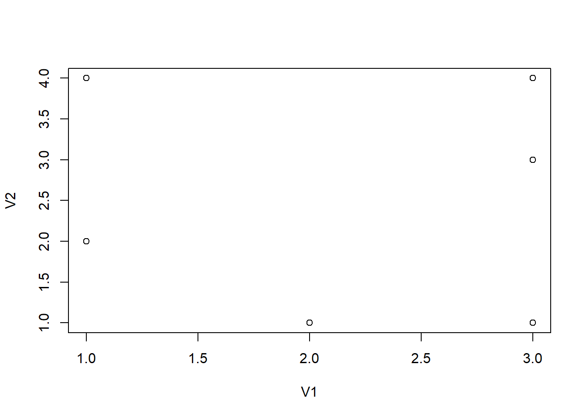

Parte 3 Sesión R1
3.1 Introducción
En esta primera sesión, particularmente acometeremos el trabajo básico de:
- instalar el software R;
- instalar el software RStudio;
- instalar los paquetes de trabajo;
- cargar los bancos de datos necesarios para comenzar nuestro trabajo;
- acercarnos al proceso de datos ‘real,’ por medio de la tabulación.
3.1.1 Instalar R
Software R
Acceder a la web del proyecto R y descargar e instalar la versión indicada.
3.1.2 Instalar RStudio
Software RStudio
Acceder a la web de RStudio y descargar e instalar la versión indicada.
3.2 Preguntas y respuestas antes de comenzar …
¿Qué es R?
R es un entorno y lenguaje de programación con un enfoque al análisis estadístico.
R nació como una reimplementación de software libre del lenguaje S, adicionado con soporte para ámbito estático. Se trata de uno de los lenguajes de programación más utilizados en investigación científica, siendo además muy popular en los campos de aprendizaje automático (machine learning), minería de datos, investigación biomédica, bioinformática y matemáticas financieras. A esto contribuye la posibilidad de cargar diferentes bibliotecas o paquetes con funcionalidades de cálculo y de realización de gráficos.
¿Qué es RStudio?
RStudio es un entorno de desarrollo integrado (IDE) para el lenguaje de programación R, dedicado a la computación estadística y gráficos. Incluye una consola, editor de sintaxis que apoya la ejecución de código, así como herramientas para el trazado, la depuración y la gestión del espacio de trabajo.
RStudio está disponible para Windows, Mac y Linux o para navegadores conectados a RStudio Server o RStudio Server Pro (Debian / Ubuntu, RedHat / CentOS, y SUSE Linux). RStudio tiene la misión de proporcionar el entorno informático estadístico R. Permite un análisis y desarrollo para que cualquiera pueda analizar los datos con R.
¿Qué es un script de R base (.R)?
Los script son documentos de texto con la extensión de archivo . R, por ejemplo mi script. R . Estos archivos son iguales a cualquier documentos de texto, pero R los puede leer y ejecutar el código que contienen.
¿Qué es Markdown?
Markdown es un lenguaje de marcado ligero creado por John Gruber que trata de conseguir la máxima legibilidad y facilidad de publicación tanto en su
forma de entrada como de salida, inspirándose en muchas convenciones existentes para marcar mensajes de correo electrónico usando texto plano.
Markdown convierte el texto marcado en documentos XHTML utilizando html2text creado por Aaron Swartz. Te aconsejamos el siguiente
enlace para conocer los rudimentos del lenguaje.
¿Qué es un script de rMarkdown (.Rmd)?
R Markdown es un formato que permite una fácil creación de documentos, presentaciones dinámicas y informes de R. Markdown es un formato de sintaxis simple en documento de texto para crear documentos en HTML, PDF, y Word.
¿Qué es un archivo HTML self-contained?
Los ficheros HTML self contained son ficheros autónomos que residen en un solo archivo HTML. No puede incluir ningún otro archivo y deben funcionar sin una conexión de red. Un usuario debería poder guardar el archivo, abrirlo localmente y tener todo listo para trabajar.
¿Qué es un vector?
Los vectores en R son objetos de una única dimensión que puede contener datos numéricos, cadena de caracteres o datos lógicos, entre otros.
Esencialmente son uno de los elementos básicos en la estructura de los datos en R. Se crean con la estructura c().
¿Qué es una matriz?
Una matriz en R es un conjunto de elementos del mismo tipo (numérico, carácter, lógico, etc) organizado en filas y columnas. Las matrices en R se
construyen con la función matrix(). Aunque con un ejemplo siempre es mucho más fácil comprender cómo funcionan las matrices.
¿Qué es un dataframe?
Un dataframe es lo que conocemos como un fichero de datos. Son estructuras para trabajar con datos de diferentes tipos (cadena, lógicos,
aritméticos). Utilizar una estructura de datos tabular (como una matriz) pero que permite manipular distintos tipos de datos por lo que podemos tener
una columna con caracteres, otra con números y otra con variables lógicas. Son importante para hacer tablas, cuadros, gráficas, análisis y modelos que
tienen muchas variables estadísticas. Se crean con la estructura data.frame().
¿Qué es un paquete / librería?
Un paquete (package) es una colección de funciones, datos y código R que se almacenan en una carpeta conforme a una estructura bien definida, fácilmente accesible para R. En la web de R se puede consultar la lista de paquetes disponibles.
¿Qué es un objeto?
La información que manipulamos en R se estructura en forma de objetos. Para trabajar con R resulta importante conocer los principales tipos de objetos
y sus propiedades básicas. En general, cada tipo de objeto viene definido por una serie de atributos. Las funciones genéricas (como por ejemplo
summary o plot) reconocen estos atributos y llevan a cabo distintos tipos de acciones en función del tipo de objeto.
¿Qué es un chunk?
Los trozos de código R o que se insertan en archivos markdown se denominan chunk y permiten hacer análisis estadísticos y mostrar los resultados en el documento final. Los chunk tienen diversas opciones que permiten una mayor flexibilidad en como se muestra el código y los resultados en el documento final.
print('_aquí iría el código_')[1] "_aquí iría el código_"¿Qué es inline code?
A diferencia de los chunk, el inline code se inserta en el texto del archivo, es de este modo como insertamos aquí la fecha: 2021-12-09.
3.3 Instalar y cargar paquetes básicos
Los paquetes necesarios son cargados seguidamente. Si alguno no estuviera disponible debería ser instalado con install.packages(). El paquete
fontawesome, tiene una forma especial de instalación. Es por ello que se cita al final de forma específica.
#install.packages(c('readr', 'readxl','tidyverse', 'kableExtra', 'igraph', 'plotly', 'highcharter', 'sparkline', 'expss'))
#devtools::install_github("rstudio/fontawesome")
suppressMessages(library('readr', quietly = TRUE))
suppressMessages(library('readxl', quietly = TRUE))
suppressMessages(library('tidyverse', quietly = TRUE))
suppressMessages(library('kableExtra', quietly = TRUE))
suppressMessages(library('igraph', quietly = TRUE))
suppressMessages(library('plotly', quietly = TRUE))
suppressMessages(library('highcharter', quietly = TRUE))
suppressMessages(library('sparkline', quietly = TRUE))
suppressMessages(library('expss', quietly = TRUE))
suppressMessages(library('fontawesome', quietly = TRUE))
options(highcharter.theme = hc_theme_hcrt(tooltip = list(valueDecimals = 2)))MIM 2020 - 2021 - TECNICAS MULTIVARIANTES EN INVESTIGACION DE MERCADOS
3.4 Practicando el scripting
3.4.1 Ejercicio: script 01
Un primer ejemplo para iniciarnos en R es crear el siguiente script donde:
- se crean dos vectores,
- se publica su contenido,
- se unen esos dos vectores creando un dataframe
- se publica el dataframe
- se muestra la estructura del dataframe
- calcularemos la media aritmética del vector
- calcularemos la media aritmética del campo en el dataframe
# Primero creamos dos vectores
x <- c(1,2,3,1,3,1,3,3,3)
y <- c(2,1,3,4,1,2,4,1,1)
# Publicamos su contenido
x[1] 1 2 3 1 3 1 3 3 3y[1] 2 1 3 4 1 2 4 1 1# A continuación creamos un _dataframe_ con los dos vectores
df1 <- data.frame(V1=x,V2=y)
# Publicamos su contenido
df1 V1 V2
1 1 2
2 2 1
3 3 3
4 1 4
5 3 1
6 1 2
7 3 4
8 3 1
9 3 1# Validamos su estructura
str(df1)'data.frame': 9 obs. of 2 variables:
$ V1: num 1 2 3 1 3 1 3 3 3
$ V2: num 2 1 3 4 1 2 4 1 1# Obtengamos un estadístico, por ejemplo la media
mean(x) # obtenida del vector[1] 2.222222mean(df1$V1) # obtenida del _dataframe_; nótese la nomenclatura y el uso de $[1] 2.2222223.4.2 Ejercicio: script 02
En este segundo caso, vamos a acercarnos a conocer la influencia de los valores perdidos (ausencias de valor en la información) y su efecto ante el cálculo de estimaciones estadísticas. En este caso …
- crearemos los vectores de nuevo, añadiendo un valor perdido (NA),
- se publica su contenido,
- se unen esos dos vectores creando un dataframe,
- se publica el dataframe,
- realizaremos de nuevo los cálculos estadísticos anteriores con una leve modificación
# Modificamos los dos vectores
x <- c(1,2,3,1,3,1,3,3,3, NA) #alternativamente podríamos haber hecho x <- c(x,NA)
y <- c(2,1,3,4,1,2,4,1,1, NA) #alternativamente podríamos haber hecho y <- c(y,NA)
# Publicamos su contenido
x [1] 1 2 3 1 3 1 3 3 3 NAy [1] 2 1 3 4 1 2 4 1 1 NA# A continuación creamos un dataframe con los dos vectores
df1 <- data.frame(V1=x,V2=y)
# Publicamos su contenido
df1 V1 V2
1 1 2
2 2 1
3 3 3
4 1 4
5 3 1
6 1 2
7 3 4
8 3 1
9 3 1
10 NA NA# Obtengamos un estadístico, por ejemplo la media
mean(x) #obtenida del vector[1] NAmean(df1$V1) #obtenida del dataframe[1] NAmean(df1$V1, na.rm=TRUE) #obtenida del dataframe[1] 2.2222223.4.3 Ejercicio: script 03
En este tercer caso, vamos a anticipar un gráfico muy simple hecho con la base de R y el mismo gráfico utilizando la librería highcharter, que será
nuestra librería gráfica de referencia.
El gráfico es obtenido usando el dataframe denominado df que fue cargado inicialmente.
# Nuestro primer gráfico
plot(df1) 
# Nuestro primer gráfico actual
library(highcharter) # no haría falta si ya está cargado.
hchart(df1, type='scatter', hcaes(x=V1, y=V2))3.4.4 Ejercicio: script 04
En este cuarto ejercicio, añadiremos a nuestro dataframe un identificador de los casos, y para ello usaremos una función LETTERS[] de R que asigna
letras a los valores. Como hay 10 casos, así lo indicamos a la función.
Posteriormente, representamos el gráfico como un diagrama de barras para la variable V2 del dataframe llamado df1, e ir completando.
# Vamos a hacer otros gráficos de la forma completa
# Añadimos un campo a df con el nombre de una letra(alumno, ciudad, ...) denominado name
df1$name <- LETTERS[1:10]
df1 V1 V2 name
1 1 2 A
2 2 1 B
3 3 3 C
4 1 4 D
5 3 1 E
6 1 2 F
7 3 4 G
8 3 1 H
9 3 1 I
10 NA NA J# hacemos el gráfico de barras (1)
highchart() %>%
hc_chart(type = 'bar') %>%
hc_xAxis(categories = df1$name) %>%
hc_add_series(df1$V2)# hacemos el gráfico de barras (2)
highchart() %>%
hc_chart(type = 'bar') %>%
hc_xAxis(categories = df1$name) %>%
hc_add_series(df1$V2, color='green')# hacemos el gráfico de barras (3)
highchart() %>%
hc_chart(type = 'bar') %>%
hc_xAxis(categories = df1$name) %>%
hc_add_series(df1$V2, color='green', name='Ingresos') %>%
hc_add_series(df1$V1, color='red', name='Gastos')3.4.5 Ejercicio: script 05
Por último, practiquemos la carga de datos. Aunque RStudio proporciona herramientas en su IDE para poder cargar datos desde archivos de texto, Excel ©
o SPSS © preferimos que la carga del archivo se haga desde el mismo script de trabajo. Por ello, usaremos los paquetes readr para ficheros de
texto, readxl para archivos xls o xlsx y expss para archivos SPSS. Las instrucciones serán muy simples. Para evitar repetir la carga en las
diferentes secciones de este capítulo, cargamos inicialmente todos los archivos. Los paquetes mencionados deberán haber sido cargados previamente.
3.4.5.1 Carga desde CSV
El script que permitiría la lectura de un archivo denominado ‘df.csv’ (texto separado por comas)…
require('readr')
df <- suppressMessages(read_csv("https://drive.google.com/uc?export=download&id=1OStFMmg5fzIpfTZnzX9Ql8sefN7se5SW", col_names=TRUE)) #df.csv, archivo con su ruta en el disco
df# A tibble: 6 x 11
x y z low high value name color from to weight
<dbl> <dbl> <dbl> <dbl> <dbl> <dbl> <chr> <chr> <chr> <chr> <dbl>
1 0 1.6 -34 -6 9.2 1 lemon #d35400 lemon olive 1
2 1 11 -23 6.7 15.3 10 nut #2980b9 lemon guava 1
3 2 20.4 6.8 2.8 38 19 olive #2ecc71 lemon fig 1
4 3 22.1 32.3 19.4 24.8 21 guava #f1c40f nut olive 1
5 4 15.4 27.7 12.1 18.7 14 fig #2c3e50 olive pear 2
6 5 7.4 3.2 -11.8 26.6 6 pear #7f8c8d guava pear 23.4.5.2 Carga desde XLS, XLSX
El script que permitiría la lectura de un archivo denominado ‘df.xlsx’ (archivo Excel ©)…
#require('readxl')# se necesita el paquete readxl; si no está cargado, cárgalo
#dfxls <- suppressMessages(read_excel("https://drive.google.com/uc?export=download&id=1JAm972XZeCHT2fQ2Sz_Sl_97o_Pa110U")) # df.xlsx, archivo con su ruta en el disco3.4.5.3 Carga desde SPSS
El script que permitiría la lectura de un archivo denominado ‘3192.sav’ (archivo SPSS © etiquetado)…
require('expss')# se necesita el paquete expss; si no está cargado, cárgalo
data <- suppressMessages(read_spss("https://drive.google.com/uc?export=download&id=11q4pg2iWwWdV9mk5P44ejoAcj5CJEfJM")) # 3192.sav, archivo con su ruta en el disco
head(data, 5) ESTU CUES CCAA PROV MUN TAMUNI CAPITAL DISTR SECCION ENTREV OLA P1 P2 P3 P401 P402 P403 P404 P501 P502 P503 P504 P6 P6A01 P6A02 P6B P6C P6D P7 P7A P801 P802 P803 P8A01 P8A02 P8A03 P8B01 P8B02 P8B03 P901 P902 P903 P904 P905 P906 P907 P908 P1001 P1002 P1003 P11 P11A01 P11A02 P11B P11C P11D P12 P12A01 P12A02 P12B P12C P12D01 P12D02 P12D P1301 P1302 P1303 P1304 P1305 P14 P14A01 P14A02 P14B P14C P1501 P1502 P1503 P1504 P1505 P1506 P16 P17 P18 P18A P18B P18C01 P18C02 P18C03 P18C04 P18C05 P18C06 P18C07 P18C08 P19 P20 P21 P21A01 P21A02 P21A03 P21A04 P21B P22 P23 P24 P2501 P2502 P2503 P2601 P2602 P2603 P2604 P27 P28 P29 P30 P30A P30AR P31 P32 P33 P34 P35 P35A P36 P37 P38 P39 P40 P41 P42 P42A P43 P44 P45 P46 P46A P46B P46C P46D P47 P47A P47B P48 P4901 P4902 P4903 P4904 P5001 P5002 P5003 P5004 P5005 P5101 P5102 P5103 P5104 P5105 P52 P53 P54 P55 I1 I2 I3 I4 I5 I6 I7 I8 I9 E101 E102 E103 E2 E3 E4 C1 C1A C2 C2A C2B C3 C4 RECUERDO ESTUDIOS OCUMAR11 RAMA09 CONDICION11 ESTATUS PESO
1 3192 1 16 1 59 5 1 0 0 0 3 9 3 6 1 1 1 1 7 7 8 8 1 2 0 1 2 3 3 1 1 2 1 2 0 1 96 96 8 7 7 7 7 6 6 6 7 3 2 3 2 96 96 0 0 0 2 96 96 0 0 NA NA NA 6 7 7 6 3 2 96 96 0 0 7 7 5 5 6 2 3 2 1 8 1 NA NA NA 1 NA NA NA NA 2 2 2 0 0 0 0 0 3 1 2 10 10 8 1 2 2 1 2 3 99 1 99 99 2 51 1 1 3 5 2 1 1 2 1 561 2 1 87 99 99 1 1 0 0 0 1 16 0 1 NA NA NA NA - - - - - - - - - - 2 2 2 2 7 NA 30 2 2 NA 12 NA 1 20 10 17 5 17 3 1 0 2 1 0 1 0 99 5 5 4 7 2 0.925
2 3192 2 16 1 59 5 1 0 0 0 3 2 2 7 1 1 1 1 7 7 7 7 1 1 0 0 2 3 1 NA 1 1 1 2 2 1 96 96 7 7 7 7 7 7 7 7 1 3 2 3 2 96 96 0 0 0 1 2 0 2 3 97 97 9997 7 7 7 7 1 2 96 96 0 0 7 7 9 7 7 1 4 8 2 0 0 0 0 0 0 0 0 0 0 2 2 2 0 0 0 0 0 1 1 1 10 6 4 2 9 9 2 1 3 2 1 3 3 1 37 1 1 3 13 1 2 1 1 1 215 4 0 86 7 6 1 1 0 0 0 1 16 0 3 NA NA NA NA - - - - - - - - - - 2 2 2 2 1 NA 11 NA 2 2 2 NA NA 20 10 17 5 17 1 1 0 1 0 0 1 0 3 6 2 4 1 1 0.925
3 3192 3 16 1 59 5 1 0 0 0 3 2 2 8 1 1 1 1 8 8 8 8 1 2 0 2 2 2 3 1 1 1 1 1 2 1 10 96 10 8 8 8 8 6 8 8 2 2 3 3 2 96 96 0 0 0 1 1 0 2 3 25 0 25 7 7 7 7 2 2 96 96 0 0 7 7 7 7 7 2 2 3 2 0 0 0 0 0 0 0 0 0 0 2 2 2 0 0 0 0 0 1 8 2 10 10 10 1 2 2 1 1 2 4 1 99 99 2 60 1 2 3 7 2 2 4 3 2 351 1 3 35 10 7 1 1 0 0 0 1 16 0 1 NA NA NA NA - - - - - - - - - - 2 2 1 1 2 NA 10 NA NA 1 NA NA NA 20 10 17 5 30 2 1 0 1 0 0 1 0 99 5 3 2 8 2 0.925
4 3192 4 16 1 59 5 1 0 0 0 3 9 2 8 1 1 1 1 9 9 9 1 1 1 0 0 1 3 2 NA 1 2 1 1 0 2 9 96 96 10 98 10 98 5 7 7 3 2 3 2 2 96 96 0 0 0 1 1 0 1 3 0 1 30 9 9 10 10 3 2 96 96 0 0 8 10 4 8 9 3 2 8 1 10 2 0 0 0 0 0 0 0 0 3 2 2 0 0 0 0 0 3 2 2 10 10 10 1 2 2 1 1 1 2 1 98 98 1 53 1 1 3 11 1 1 4 1 1 223 1 1 85 9 7 1 1 0 0 0 1 16 0 1 NA NA NA NA - - - - - - - - - - 2 2 2 1 3 NA 31 NA 2 2 10 1 NA 20 10 17 5 18 2 1 0 1 0 0 1 0 98 6 2 4 2 1 0.925
5 3192 5 16 1 59 5 1 0 0 0 3 3 2 7 1 1 1 1 9 5 8 8 1 2 0 1 2 3 4 1 1 1 1 2 2 2 96 96 96 8 8 9 9 6 8 8 4 2 3 2 2 96 96 0 0 0 1 1 0 2 3 0 4 120 5 6 8 8 4 2 96 96 0 0 5 10 7 5 98 4 8 2 1 10 2 0 0 0 0 0 0 0 0 2 2 2 0 0 0 0 0 1 1 2 10 8 10 2 2 2 1 2 3 1 1 3 3 2 69 3 2 3 4 2 2 4 1 2 921 1 3 81 5 5 1 1 0 0 0 1 14 0 1 NA NA NA NA - - - - - - - - - - 2 2 2 2 4 NA 13 NA NA 1 9 NA NA 20 10 17 5 19 2 1 0 1 0 0 1 0 3 3 9 4 8 5 0.925tail(data,5) ESTU CUES CCAA PROV MUN TAMUNI CAPITAL DISTR SECCION ENTREV OLA P1 P2 P3 P401 P402 P403 P404 P501 P502 P503 P504 P6 P6A01 P6A02 P6B P6C P6D P7 P7A P801 P802 P803 P8A01 P8A02 P8A03 P8B01 P8B02 P8B03 P901 P902 P903 P904 P905 P906 P907 P908 P1001 P1002 P1003 P11 P11A01 P11A02 P11B P11C P11D P12 P12A01 P12A02 P12B P12C P12D01 P12D02 P12D P1301 P1302 P1303 P1304 P1305 P14 P14A01 P14A02 P14B P14C P1501 P1502 P1503 P1504 P1505 P1506 P16 P17 P18 P18A P18B P18C01 P18C02 P18C03 P18C04 P18C05 P18C06 P18C07 P18C08 P19 P20 P21 P21A01 P21A02 P21A03 P21A04 P21B P22 P23 P24 P2501 P2502 P2503 P2601 P2602 P2603 P2604 P27 P28 P29 P30 P30A P30AR P31 P32 P33 P34 P35 P35A P36 P37 P38 P39 P40 P41 P42 P42A P43 P44 P45 P46 P46A P46B P46C P46D P47 P47A P47B P48 P4901 P4902 P4903 P4904 P5001 P5002 P5003 P5004 P5005 P5101 P5102 P5103 P5104 P5105 P52 P53 P54 P55 I1 I2 I3 I4 I5 I6 I7 I8 I9 E101 E102 E103 E2 E3 E4 C1 C1A C2 C2A C2B C3 C4 RECUERDO ESTUDIOS OCUMAR11 RAMA09 CONDICION11 ESTATUS PESO
2553 3192 2596 19 52 1 4 1 0 0 0 3 3 2 6 1 1 1 1 8 7 6 7 1 10 0 2 1 2 4 7 1 2 2 1 0 0 4 96 96 7 7 8 8 8 8 8 5 1 3 1 2 96 96 0 0 0 2 96 96 0 0 NA NA NA 7 8 8 8 4 2 96 96 0 0 7 7 7 6 7 4 3 8 1 4 1 NA NA NA NA NA 1 NA NA 8 2 2 0 0 0 0 0 3 1 3 10 8 8 2 2 2 8 1 1 5 5 0 0 1 32 2 2 3 12 3 1 4 2 4 271 2 3 62 98 1 1 1 0 0 0 1 19 0 1 1 NA NA NA - - - - - - - - - - 2 3 2 2 5 NA NA NA NA NA 1 NA NA 22 10 17 7 17 2 1 0 1 0 0 1 0 97 6 2 4 9 1 0.049
2554 3192 2597 19 52 1 4 1 0 0 0 3 2 2 7 3 2 1 2 6 9 5 6 2 96 96 0 0 0 0 NA 0 0 0 0 0 0 96 96 96 7 7 7 7 1 7 7 1 2 8 2 2 96 96 0 0 0 2 96 96 0 0 NA NA NA 7 10 7 10 1 2 96 96 0 0 7 8 1 5 8 1 3 8 2 0 0 0 0 0 0 0 0 0 0 8 3 2 0 0 0 0 0 3 8 1 10 1 98 2 2 2 2 1 3 7 1 1 1 1 19 2 2 3 6 2 2 4 2 6 592 1 1 84 98 1 1 1 0 0 0 1 19 0 3 1 NA NA NA - - - - - - - - - - 2 1 2 1 6 NA 5 2 1 1 14 NA NA 22 10 17 7 19 2 1 0 1 0 0 1 0 1 4 5 4 10 2 0.049
2555 3192 2598 19 52 1 4 1 0 0 0 3 2 4 3 2 2 2 2 5 3 7 7 1 0 2 0 0 0 0 NA 0 0 0 0 0 0 96 96 96 5 5 5 5 2 5 5 1 2 3 2 1 1 0 1 0 0 2 96 96 0 0 NA NA NA 5 6 5 6 1 2 96 96 0 0 4 6 1 1 3 1 3 8 2 0 0 0 0 0 0 0 0 0 0 1 2 2 0 0 0 0 0 1 8 3 10 1 1 2 2 2 2 1 3 7 1 1 1 2 38 1 1 3 9 2 2 4 2 1 224 1 1 85 99 99 1 1 0 0 0 1 5 0 1 1 NA NA NA - - - - - - - - - - 2 1 1 1 7 NA 1 NA NA NA 3 NA NA 22 10 17 7 17 2 1 0 1 0 0 1 0 1 6 2 4 2 1 0.049
2556 3192 2599 19 52 1 4 1 0 0 0 3 2 3 5 2 2 2 2 4 6 2 3 2 96 96 0 0 0 0 NA 0 0 0 0 0 0 96 96 96 5 5 5 5 2 5 5 6 3 3 3 2 96 96 0 0 0 2 96 96 0 0 NA NA NA 5 7 5 5 4 2 96 96 0 0 6 7 1 1 3 4 3 8 2 0 0 0 0 0 0 0 0 0 0 2 3 2 0 0 0 0 0 1 1 3 10 1 1 1 1 1 1 2 4 5 5 0 0 2 20 2 2 3 6 1 2 4 2 6 740 1 3 45 98 1 1 1 0 0 0 1 19 0 1 NA NA NA 1 - - - - - - - - - - 2 1 2 1 3 NA 1 NA 1 NA 2 NA 1 22 10 17 7 17 1 1 0 1 0 0 1 0 97 4 7 4 10 4 0.049
2557 3192 2600 19 52 1 4 1 0 0 0 3 7 2 7 2 2 2 2 3 4 3 6 1 0 2 0 0 0 0 NA 0 0 0 0 0 0 96 96 96 98 98 98 98 2 98 98 1 2 3 2 2 96 96 0 0 0 2 96 96 0 0 NA NA NA 7 7 7 7 1 2 96 96 0 0 5 7 6 4 7 1 3 1 2 0 0 0 0 0 0 0 0 0 0 2 2 2 0 0 0 0 0 3 2 2 10 5 98 2 2 2 2 1 1 8 1 1 1 1 44 1 1 3 5 1 2 4 1 1 2 1 1 84 99 7 1 1 0 0 0 1 19 0 1 NA NA NA NA - - - - - - - - - - 2 1 1 1 8 NA NA NA NA NA 1 NA NA 22 10 17 7 17 2 2 1 1 0 0 1 0 1 5 10 4 12 2 0.049Nuestros dataframe df y data están cargados y listos para ser utilizados a lo largo de las sesiones.
3.4.6 Ejercicio: script 05a y 05b
Obtención de una tabla de frecuencias estilo SPSS (Script 05a).
Nótese que la tabla sale igual con las dos formas, pero mientras que en el primer caso se usa la nomenclatura estándar de R, y el campo se llama
data$P31, es decir nombre del marco de datos en R (data) el símbolo del $ que separa y nombre del campo en el marco de datos P31 en la segunda
al definir de inicio que se utilizará dataya se usa el nombre P31directamente, aunque debamos dar la orden de cálculo con el comando
calculate().
library(expss)
data <- suppressMessages(read_spss( "https://drive.google.com/uc?export=download&id=11q4pg2iWwWdV9mk5P44ejoAcj5CJEfJM"))
fre(data$P31)| Sexo de la persona entrevistada | Count | Valid percent | Percent | Responses, % | Cumulative responses, % |
|---|---|---|---|---|---|
| Hombre | 1256 | 49.1 | 49.1 | 49.1 | 49.1 |
| Mujer | 1301 | 50.9 | 50.9 | 50.9 | 100.0 |
| #Total | 2557 | 100 | 100 | 100 | |
| <NA> | 0 | 0.0 |
data %>%
calculate(fre(P31))| Sexo de la persona entrevistada | Count | Valid percent | Percent | Responses, % | Cumulative responses, % |
|---|---|---|---|---|---|
| Hombre | 1256 | 49.1 | 49.1 | 49.1 | 49.1 |
| Mujer | 1301 | 50.9 | 50.9 | 50.9 | 100.0 |
| #Total | 2557 | 100 | 100 | 100 | |
| <NA> | 0 | 0.0 |
3.4.7 Ejercicio: script 06
Para este script, indicaremos que usamos la fuente de datos cargado anteriormente. Redactamos pues nuestro script, donde identificamos el dataframe, el campo P31 del cual vamos a calcular el número de casos.
# Script 6data %>%
tab_cells(P31) %>%
tab_stat_cases() %>%
tab_pivot()| #Total | |
|---|---|
| Sexo de la persona entrevistada | |
| Hombre | 1256 |
| Mujer | 1301 |
| #Total cases | 2557 |
3.4.8 Ejercicio: script 07a
Realicemos ahora una pequeña pero importante variación en el cálculo del estadístico casos -frecuencias- y utilicemos la posibilidad de ubicar donde queramos el total de casos, así como su etiqueta. Ello lo hacemos con total_row_position = “above,” label = “Casos” aplicado a la función tab_stat_cases().
data %>%
tab_cells(P31) %>%
tab_stat_cases(total_row_position = "above", label = "Casos") %>%
tab_pivot()| #Total | ||
|---|---|---|
| Sexo de la persona entrevistada | ||
| #Total cases | Casos | 2557 |
| Hombre | Casos | 1256 |
| Mujer | Casos | 1301 |
3.4.9 Ejercicio: script 07b
Si en lugar de obtener casos (valores absolutos) queremos sacar valores porcentuales, el cambio es mínimo. Usaremos el comando tab_stat_cpct()para indicarlo.
# Script 7b
data %>%
tab_cells(P31) %>%
tab_stat_cpct(total_row_position = "above", label = "% casos") %>%
tab_pivot()| #Total | ||
|---|---|---|
| Sexo de la persona entrevistada | ||
| #Total cases | % casos | 2557 |
| Hombre | % casos | 49.1 |
| Mujer | % casos | 50.9 |
3.4.10 Ejercicio: script 08
Cuando deseamos hacer combinaciones de frecuencias y porcentajes, la filosofía de trabajo es muy parecida. En nuestro caso vamos a hacer algo muy típico. Aunque creo que resulta más sencillo leer cada estadístico en su tabla, hay ocasiones en las que la comparativa es muy necesaria y por tanto es necesario unir los estadísticos en la misma tabla. Nótese la diferencia con el siguiente cuadro…
# Script 8
data %>%
tab_cells(P31) %>%
tab_stat_cases(total_row_position = "above", label = "Casos") %>%
tab_stat_cpct(label = "% casos") %>%
tab_pivot(stat_position = "inside_columns")| #Total | ||
|---|---|---|
| Casos | % casos | |
| Sexo de la persona entrevistada | ||
| #Total cases | 2557 | 2557 |
| Hombre | 1256 | 49.1 |
| Mujer | 1301 | 50.9 |
3.4.11 Ejercicio: script 09
Diferentes modalidades de cálculo de los porcentajes.
# Script 9
data %>%
tab_cells(P31) %>%
tab_stat_cases() %>%
tab_stat_cpct() %>%
tab_stat_rpct() %>%
tab_stat_tpct() %>%
tab_pivot()| #Total | |
|---|---|
| Sexo de la persona entrevistada | |
| Hombre | 1256.0 |
| Mujer | 1301.0 |
| #Total cases | 2557 |
| Hombre | 49.1 |
| Mujer | 50.9 |
| #Total cases | 2557 |
| Hombre | 100.0 |
| Mujer | 100.0 |
| #Total cases | 2557 |
| Hombre | 49.1 |
| Mujer | 50.9 |
| #Total cases | 2557 |
3.4.12 Ejercicio: script 10
Efecto de los modificadores.
# Script 10
data %>%
tab_cells(P31) %>%
tab_stat_cases(total_row_position = "below", label = "N") %>%
tab_stat_cpct(label = "V% casos") %>%
tab_stat_rpct(label = "H% casos") %>%
tab_stat_tpct(label = "T% casos") %>%
tab_pivot(stat_position = "inside_columns")| #Total | ||||
|---|---|---|---|---|
| N | V% casos | H% casos | T% casos | |
| Sexo de la persona entrevistada | ||||
| Hombre | 1256 | 49.1 | 100 | 49.1 |
| Mujer | 1301 | 50.9 | 100 | 50.9 |
| #Total cases | 2557 | 2557 | 2557 | 2557 |
3.4.13 Ejercicio: script 11
La función var_lab() nos permite manipular la etiqueta de una variable, un texto descriptivo de su significado.
Prueba en tu consola a escribir ?expss::var_lab()
# Script 11
var_lab(data$P31)[1] "Sexo de la persona entrevistada"var_lab(data$P31) <- 'Género del entrevistado'3.4.14 Ejercicio: script 12
La función val_lab() nos permite manipular las etiquetas de una variable, definir las etiquetas de los códigos, factores o niveles.
Prueba en tu consola a escribir ?expss::val_lab()
# Script 12
val_lab(data$P31)Hombre Mujer
1 2 val_lab(data$P31) <-
c('masculino'=1, 'femenino'=2)3.4.15 Ejercicio: script 13
Para casi cerrar esta primera sesión, vamos a abordar un ejercicio diferente. Vamos ahora a instalar (si no lo está ya) el paquete gtrendsR, y cargamos los paquetes necesarios …
# Script 13
# instalar paquetes
#install.packages("gtrendsR") quitar el # sino estuviera instalado
library(gtrendsR)
library(dplyr)
library(highcharter)Obtenemos los datos de Google Trends, y los almacenamos en un dataframe, reteniendo solo los campos 1 y 2 del mismo.
# manipular datos
es_trends <- gtrends(c("Universidad de Valencia"),geo = c("ES"),gprop = "web",time = "today 12-m")
head(es_trends, 5)$interest_over_time
date hits keyword geo time gprop category
1 2020-12-13 32 Universidad de Valencia ES today 12-m web 0
2 2020-12-20 23 Universidad de Valencia ES today 12-m web 0
3 2020-12-27 21 Universidad de Valencia ES today 12-m web 0
4 2021-01-03 26 Universidad de Valencia ES today 12-m web 0
5 2021-01-10 37 Universidad de Valencia ES today 12-m web 0
6 2021-01-17 34 Universidad de Valencia ES today 12-m web 0
7 2021-01-24 38 Universidad de Valencia ES today 12-m web 0
8 2021-01-31 50 Universidad de Valencia ES today 12-m web 0
9 2021-02-07 29 Universidad de Valencia ES today 12-m web 0
10 2021-02-14 27 Universidad de Valencia ES today 12-m web 0
11 2021-02-21 39 Universidad de Valencia ES today 12-m web 0
12 2021-02-28 41 Universidad de Valencia ES today 12-m web 0
13 2021-03-07 30 Universidad de Valencia ES today 12-m web 0
14 2021-03-14 33 Universidad de Valencia ES today 12-m web 0
15 2021-03-21 56 Universidad de Valencia ES today 12-m web 0
16 2021-03-28 30 Universidad de Valencia ES today 12-m web 0
17 2021-04-04 39 Universidad de Valencia ES today 12-m web 0
18 2021-04-11 35 Universidad de Valencia ES today 12-m web 0
19 2021-04-18 32 Universidad de Valencia ES today 12-m web 0
20 2021-04-25 30 Universidad de Valencia ES today 12-m web 0
21 2021-05-02 45 Universidad de Valencia ES today 12-m web 0
22 2021-05-09 50 Universidad de Valencia ES today 12-m web 0
23 2021-05-16 55 Universidad de Valencia ES today 12-m web 0
24 2021-05-23 74 Universidad de Valencia ES today 12-m web 0
25 2021-05-30 40 Universidad de Valencia ES today 12-m web 0
26 2021-06-06 64 Universidad de Valencia ES today 12-m web 0
27 2021-06-13 96 Universidad de Valencia ES today 12-m web 0
28 2021-06-20 100 Universidad de Valencia ES today 12-m web 0
29 2021-06-27 84 Universidad de Valencia ES today 12-m web 0
30 2021-07-04 75 Universidad de Valencia ES today 12-m web 0
31 2021-07-11 97 Universidad de Valencia ES today 12-m web 0
32 2021-07-18 92 Universidad de Valencia ES today 12-m web 0
33 2021-07-25 73 Universidad de Valencia ES today 12-m web 0
34 2021-08-01 41 Universidad de Valencia ES today 12-m web 0
35 2021-08-08 30 Universidad de Valencia ES today 12-m web 0
36 2021-08-15 47 Universidad de Valencia ES today 12-m web 0
37 2021-08-22 33 Universidad de Valencia ES today 12-m web 0
38 2021-08-29 43 Universidad de Valencia ES today 12-m web 0
39 2021-09-05 64 Universidad de Valencia ES today 12-m web 0
40 2021-09-12 77 Universidad de Valencia ES today 12-m web 0
41 2021-09-19 42 Universidad de Valencia ES today 12-m web 0
42 2021-09-26 58 Universidad de Valencia ES today 12-m web 0
43 2021-10-03 45 Universidad de Valencia ES today 12-m web 0
44 2021-10-10 32 Universidad de Valencia ES today 12-m web 0
45 2021-10-17 38 Universidad de Valencia ES today 12-m web 0
46 2021-10-24 39 Universidad de Valencia ES today 12-m web 0
47 2021-10-31 28 Universidad de Valencia ES today 12-m web 0
48 2021-11-07 33 Universidad de Valencia ES today 12-m web 0
49 2021-11-14 45 Universidad de Valencia ES today 12-m web 0
50 2021-11-21 28 Universidad de Valencia ES today 12-m web 0
51 2021-11-28 32 Universidad de Valencia ES today 12-m web 0
52 2021-12-05 24 Universidad de Valencia ES today 12-m web 0
$interest_by_country
NULL
$interest_by_region
location hits keyword geo gprop
1 Valencian Community 100 Universidad de Valencia ES web
2 Castile-La Mancha 21 Universidad de Valencia ES web
3 La Rioja 16 Universidad de Valencia ES web
4 Aragon 14 Universidad de Valencia ES web
5 Navarre 12 Universidad de Valencia ES web
6 Region of Murcia 12 Universidad de Valencia ES web
7 Balearic Islands 7 Universidad de Valencia ES web
8 Castile and León 7 Universidad de Valencia ES web
9 Community of Madrid 6 Universidad de Valencia ES web
10 Galicia 6 Universidad de Valencia ES web
11 Basque Country 5 Universidad de Valencia ES web
12 Andalusia 5 Universidad de Valencia ES web
13 Canary Islands 5 Universidad de Valencia ES web
14 Catalonia 5 Universidad de Valencia ES web
15 Asturias 4 Universidad de Valencia ES web
16 Cantabria 3 Universidad de Valencia ES web
17 Extremadura 2 Universidad de Valencia ES web
18 Ceuta NA Universidad de Valencia ES web
19 Melilla NA Universidad de Valencia ES web
$interest_by_dma
NULL
$interest_by_city
location hits keyword geo gprop
1 Valencia 100 Universidad de Valencia ES web
2 Madrid 3 Universidad de Valencia ES webdf1 <- es_trends$interest_over_time[, 1:2]Si deseamos pedir ayuda, # Pedir ayuda y ver `?gtrends(). Finalmente creamos el gráfico… veces que han salido en las noticias (datos de Google
Trends) la Universitat de València.
highchart() %>%
hc_chart(type = 'line') %>%
hc_xAxis(categories = as.Date(df1$date)) %>%
hc_add_series(df1$hits, name = 'hits UV') %>% #*** API
hc_credits(enabled = TRUE,text = 'InvestigaOnline.com',href = 'https://www.investigaonline.com') %>%
hc_exporting(enabled = TRUE)¿Añadimos la Politécnica y la Complutense de Madrid?. Lo hacemos de un tirón, fíjate en las diferencias.
#install.packages("gtrendsR")
library(gtrendsR)
library(dplyr)
library(highcharter)
es_trends <- gtrends(c("Universitat de Valencia"),geo = c("ES"),gprop = "web",hl = "es",time = "today 12-m")
es_trends_interest_over_time <- es_trends$interest_over_time[, 1:2]
df1 <- es_trends_interest_over_time
es_trends <-gtrends(c("Universidad Politecnica de Valencia"),geo = c("ES"),gprop = "web",hl = "es",time = "all")
es_trends_interest_over_time <- es_trends$interest_over_time[, 1:2]
df2 <- es_trends_interest_over_time
es_trends <-gtrends(c("Universidad Complutense"),geo = c("ES"),gprop = "web",hl = "es",time = "all")
es_trends_interest_over_time <- es_trends$interest_over_time[, 1:2]
df3 <- es_trends_interest_over_time
highchart() %>%
hc_chart(type = 'line') %>%
hc_xAxis(categories = as.Date(c(df1$date, df2$date, df3$date))) %>%
hc_add_series(df1$hits,name = 'hits UV',marker = list(enabled = FALSE),color = 'salmon') %>%
hc_add_series(df2$hits,name = 'hits UPV',marker = list(enabled = FALSE),color = 'cadetblue') %>%
hc_add_series(df3$hits,name = 'hits UCM',marker = list(enabled = FALSE),color = 'green') %>%
hc_credits(enabled = TRUE,text = 'InvestigaOnline.com',href = 'https://www.investigaonline.com') %>%
hc_exporting(enabled = TRUE)3.5 Conclusión
Cerramos esta primera parte de las sesiones R, donde hemos comenzado a trabajar con pequeños trozos de código, diferenciando entre lo que es un script de tipo R, de un script de tipo rmarkdown. Hemos hecho una amplia revisión de conceptos y no en este documento, pero sí en la sesión presencial, hemos revisado materiales de trabajo para iniciarse en el conocimiento de R. Saber hasta dónde podemos llegar. La segunda sesión, nos meterá de forma mucho más concienzuda en el análisis de tablas y gráficos y la creación de un mini-dashboard.